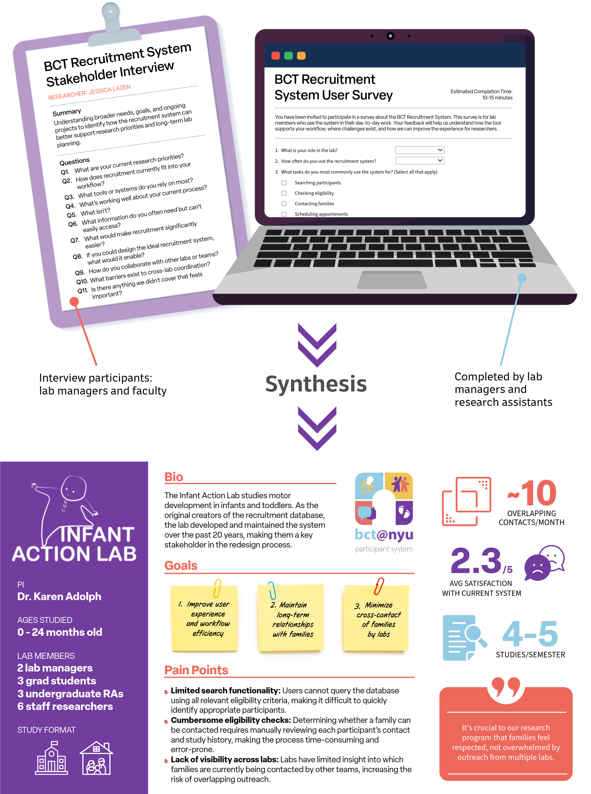

Methods
User and Stakeholder Interviews
Surveys
Contextual inquiry
User Flow Mapping
Sitemap
Wireframing
Usability Testing
Database Development
Challenge
BabyChildTeen@NYU, a group of developmental psychology research labs, needed to improve its study recruitment and participation database. The existing system was outdated, inefficient, and offered a poor user experience. Additionally, staff faced challenges with record sharing and assignment: participants eligible for multiple studies risked over-contact, and labs needed a way to coordinate assignments by eligibility criteria to manage records efficiently.
Research Goals
Improve UX: Intuitive, easy-to-use interface for staff.
Streamline recruitment: Reduce administrative burden and inefficiencies.
Coordinate assignments: Avoid over-contact and maximize engagement.
Enhance data quality: Standardize records for easy management and search.
Secure participant data: Log user activity and implement access controls.
Team
I was in an advantageous position for this project, having served as the administrator for the existing system. This gave me experience using the database from both admin and user perspectives. I also had insights from informal conversations with users about pain points and areas for improvement. When the decision was made to formally redesign the database, I collaborated closely with faculty, lab managers, research assistants, and IT specialists to re-imagine the participant management system.
Research & Discovery
Lab Profiles
Context
Each of the 8 labs in BabyChildTeen@NYU consists of a faculty member overseeing a team of graduate students, research staff, and undergraduate research assistants. While all labs rely on the shared recruitment system, they differ in research focus, study volume, recruitment frequency, and day-to-day workflows—resulting in distinct needs and constraints across teams.
Methods
I conducted in-person interviews with all 8 faculty to understand their research programs and long-term goals. I also interviewed lab managers, who directly oversee and train research assistants, and collected data from lab members via a Qualtrics survey to capture broader staff perspectives.
Objective
Synthesize insights from interviews and survey data into comprehensive lab profiles to guide system design and support user needs.

User Flow Analysis
Context
BabyChildTeen@NYU relies on a legacy recruitment database originally built over 20 years ago by a single lab. At the time, the system was not designed for online research or cross-lab use. Over time, it was adopted by multiple labs with very different study formats, recruitment volumes, and workflows. As a result, labs now use the same system in fundamentally different ways, requiring significant oversight from a central administrator to coordinate access and prevent conflicts.
Online-focused labs primarily conduct large-scale email outreach to families nationwide, while in-person labs rely on long-term relationships with local families and conduct most recruitment via phone calls. These divergent workflows place increasing strain on a system that was never designed to support multiple recruitment models simultaneously. New staff require extensive training to navigate the system, and even experienced users rely on memory and manual cross-checking to complete routine tasks.
Methods
I conducted think-aloud contextual inquiry sessions with lab managers and research staff as they completed recruitment tasks in the system. Participants verbalized their thought process while searching for participants, checking eligibility, contacting families, scheduling appointments, and closing out studies.
To complement live observation, I reviewed existing training materials and onboarding documentation to understand how new staff are taught to use the system—and where informal knowledge fills gaps. These combined methods allowed me to capture both intended workflows and actual day-to-day practices, including workarounds and edge cases.
Objective
My goal was to surface mismatches between the system’s original design assumptions and current lab needs, identify high-friction moments, and uncover opportunities to support both in-person and remote research workflows. These insights informed the redesign strategy and ensured it served all labs—not just the original system owners.

Please note this write up us a work in progress. Last update: 1/15/26